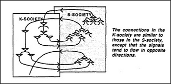

According to our concept of memory, the K-lines of each agency grow into a new society. So, to keep things straight, let's call the original agents S-agents and call their society the S-society. Given any S-society, we can imagine building memories for it by constructing a corresponding K-society for it. When we start making a K-society, we must link each K-line directly to S-agents, because there are no other K-lines we can connect them to. Later we can use the more efficient policy of linking new K-lines to old ones. But this will lead to a different problem of efficiency: the connections to the original S-agents will become increasingly remote and indirect. Then everything will begin to slow down — unless the K-society continues to make at least some new connections to the original S-society. That would be easy to arrange, if the K-society grows in the form of a layer close to its S-society. The diagram below suggests such an arrangement.
If arranged this way, the layer pairs could form a curious sort of computer. As S-agents excite K-agents and vice versa, a sort of spiraling activity would ensue. Over time, the location of that activity might tend to drift upward or down and might also tend to spread out; without some control, the system might soon become chaotic. But it would be hard to control the system from within, nor would that serve the purposes of other agencies. However, we can easily imagine how yet another, third agency could confine and control the K-S system's activity — by specifying which level-band should remain active and suppressing all the rest. Indeed, that is precisely the sort of coarse control that a B-brain might exercise, since it could do all this without needing to understand the fine details of what is happening inside the A-brain. The third agency might simply look on and say impatiently, This isn't getting anywhere: move up to take a higher-level view of the situation. Or it might say, That looks like progress, so move farther down and fill in more details.
Is there any essential difference between the K-and S-societies? Not really — except that the S-society came first. Indeed, we can imagine an endless sequence of such societies, in which each new one learns to exploit the last. Later we'll propose that this is how our minds develop in infancy — as sequences of layers of societies. Each new layer begins as a set of K-lines, which starts by learning to exploit whatever skills have been acquired by the previous layer. Whenever a layer acquires some useful and substantial skill, it tends to stop learning and changing — and then yet another new layer can begin to learn to exploit the capabilities of the last. Each new layer begins as a student, learning new ways to use what older layers can already do. Then it slows its learning rate — and starts to serve both as subject and as teacher to the layers that form afterward.